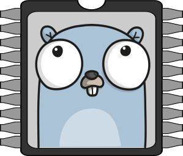

Go Without Wires Strikes Back
FOSDEM 2024
Ron Evans - @deadprogram
FOSDEM 2021
Go Without Wires

Go Bluetooth
tinygo.org/bluetooth
FOSDEM 2022
Go Further Without Wires
FOSDEM 2023
Go Even Further Without Wires
FOSDEM 2024
Go Without Wires
Strikes Back
Ron Evans (@deadprogram)
Technologist For Hire
hybridgroup.com
Software that makes
your hardware work
Open Source Projects

tinygo.org
Secret plans for Go wireless
communication are no longer secret
Network Types By Spatial Scale
There is a whole universe
of frequencies to explore
Thanks to the community
We are doing exactly that
Go Bluetooth
Linux
macos
Windows
Bare metal on nordic semi
new Bare metal support
Bluetooth Host Controller Interface (HCI)
HCI?
Typical wireless embedded device Architecture

Many boards use this setup
Arduino
Adafruit
Espressif ESP32
Wifi + Bluetooth
NINA-FW
github.com/arduino/nina-fw
Bluetooth support now enabled on many boards
how bluetooth works; tldr version

TinyScan
Bluetooth Warscanner As A Conference Badge
Adafruit PyBadge
Microchip ATSAMD51J18
ARM Cortex M4
32-bit processor
120 Mhz
256K Flash
Adafruit Airlift Wifi Featherwing
Espressif ESP32-MINI-1
Xtensa Dual-core LX6
240 Mhz
520k Flash
tinyscan Hardware
tinyscan Code
See the code
tinyscan Demo
Cube Life
Conways Game of Life
As An LED Cube
With Bluetooth Control
vita
github.com/acifani/vita
6 parallel games of life